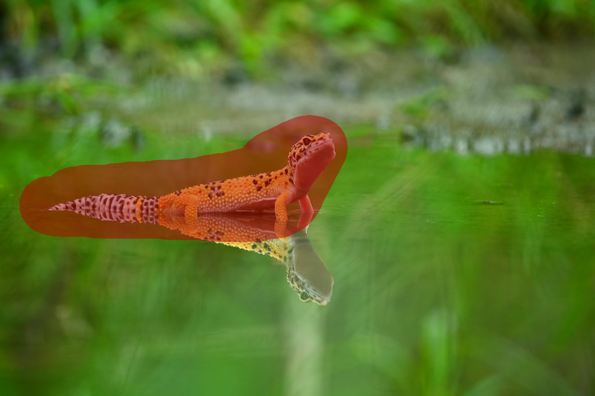
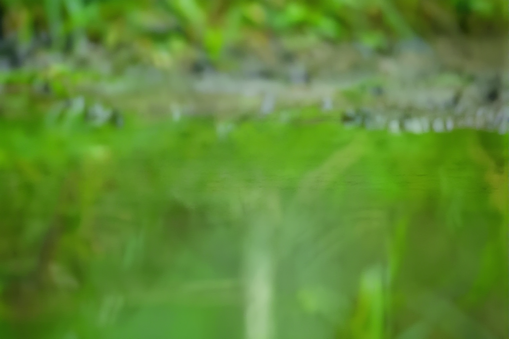

Image editing
Object Removal
Remove a selected object and reconstruct a plausible background inside its mask.


What you’ll build
Adapt an inpainting model using aligned images with and without an object, then preserve the original pixels outside the removal mask.
Model and adaptation
Stable Diffusion inpainting with LoRA in U-Net attention; frozen VAE and text encoder.
Latent diffusion provides the inpainting foundation; OmniEraser studies removal together with object effects. The local course evaluator measures masked reconstruction and does not reproduce RemovalBench's official semantic scoring.
Data
Training
Licensed input/mask/clean-target triples, separated by scene. Clearly labelled synthetic pairs can support initial experiments.
Evaluation
Held-out scenes and RemovalBench as a separate test benchmark; include the object's shadow or reflection in the mask when needed.
How to measure success
- Masked MAE ↓
- Pixel error inside the edited region against the clean target.
- Masked PSNR ↑
- Reconstruction quality inside the removal mask.
- Outside-mask MAE ↓
- Preservation of untouched pixels; compositing makes this zero by construction.
- Visual review
- Check object remnants, seams, invented objects, shadows and reflections.
What to submit
- A saved inpainting model and mask-based editing demo.
- Before/after examples with visible removal masks.
- A baseline comparison on held-out paired scenes.
- An error analysis of difficult backgrounds and object effects.